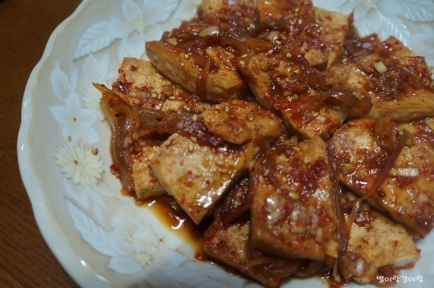

소고기미역국
<재료>:소고기,미역,간장,참기름,다진마늘
1.미역을 물에 불린다.
2.냄비에 참기름을 넣고 다진마늘과 소고기를 같이 볶는다.
3.불린 미역을 물을 빼고 넣고 간장을 넣고 같이 볶다가 물을 넣는다.
4.끓이면서 간을 보면 완성
(tip)간장은 국간장이 좋지만 없으면 진간장도 가능/소고기 대신 해산물이나 참치를 넣어도 좋아요./물 대신 다른 육수나 쌀뜨물 넣으면 더 맛있어요.
두부조림
<재료>:두부,기름,고춧가루,간장,다진마늘,설탕,참기름,고추,파,양파

1.양념장(양파,파,고추,간장,고춧가루,다진마늘,설탕,참기름,물).
2.기름을 넣고 두부를 앞뒤로 구워줍니다.
3.구워준 두부에 양념장을 넣고 조려주면 완성
(tip)양념장에 굴소스를 넣거나 물 대신 주스나 사이다를 넣어도 맛있어요.
멸치볶음
<재료>:잔멸치,기름,간장,설탕,물엿,참기름,(견과류),(꽈리고추)
1.양념(간장,설탕,물엿,참기름)을 만든다.
2.멸치를 센불에 볶아주다가 견과류를 넣고 볶는다.
3.기름을 넣고 볶아주다가 양념을 넣고 약불로 살짝만 볶으면 완성
(tip)마른팬에 멸치를 볶을때는 타지않게 주의/양념에 고추를 썰어 넣어도 좋아요/참깨가있으면 마지막에 뿌려주세요.